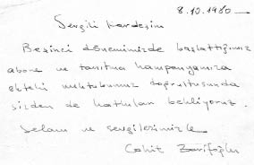

(Tarihsiz)
Sevgili Şakir
Mavera’nın yeni sayısı baskıda. Bugün bitecek, sanırım yarın matbaadan alıp sana gönderebileceğiz. İstanbul’da belli başlı noktalardaki kitap evlerine, bayilere dergiyi bıraktığını söylüyorsun. Bu noktaları ne kadar çok artırabilirsek o kadar iyi olur.Satışları da iyi takip edelim. Satışı artan noktalara bir sonraki ay daha fazla dergi bırakalım. Abone ve reklam çalışmalarını da aralıksız sürdürelim.
Edebiyat sayfasındaki okuyucularla köşesi daha canlı hale gelebilir. Yorumların iyi. Size yazan genç arkadaşlara, önce iyi bir okuyucu olmaları gerektiğini söylüyorsun. Bu tespitin güzel. Onların okumalarının, daha çok okumalarının, yazı çalışmalarının sağlayacağı katkının önemini de anlatmalısın. Sanat-edebiyat dergilerini düzenli olarak izlemelerini, onlar hakkında yorum yapmalarını, zamanla da yeni çıkan kitaplarla ilgili tanıtım yazıları yazmalarını sağlayabilirsin. Bunlar arasında seçeceğin, belli bir olgunluğa erişmiş yazıları sayfada yayınlayabilirsin. Mavera’da yayınlayabileceğimiz türden, daha kapsamlı çalışmaları da bize gönderebilirsin. Derginin son bölümündeki kitap tanıtım yazılarını çoğaltmalıyız. Çevrenden, takip ettikleri dergiler, okudukları kitaplarla ilgili eleştiri ve tanıtım yazıları isteyebilirsin. Arkadaşların bu tür eleştiri ve tanıtım yazıları yazmaları konusunda ısrarcı olmalıyız.
Erdem’in Afganistan seyahati ile ilgili kitabı önümüzdeki ayın ilk günleri matbaada olacak. Kitap fuarına yetiştirebiliriz sanıyorum. Fuara kadar kitaplarımızın, derginin dağıtımı ile ilgili canlı bir ilgi bekliyorum sizden. Âlim’le de görüşün, birlikte çalışın.
Selam ve sevgiler.
Cahit Zarifoğlu
